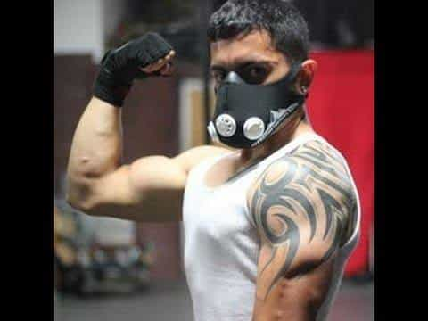
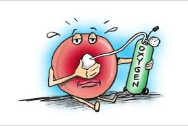
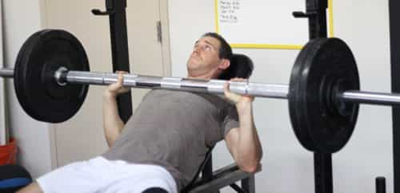
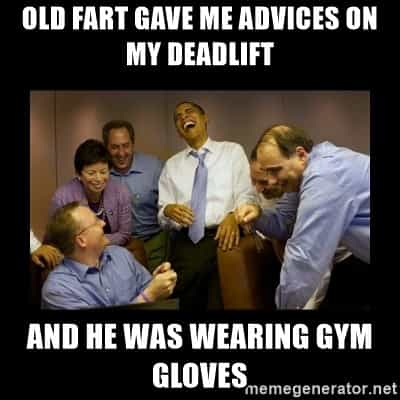

< < < Back
5 Pieces Of Gym Paraphernalia That You Don’t Need – Return Of Kings
After going to the gym for a few months, a newbie lifter will likely become more serious and dedicated to the sport. Shortly thereafter, that lifter will begin seeking an edge, to make himself stronger and more able than his fellow gymgoers.
Seeing as I generally assume that my readers are decent, law-abiding citizens, the “edge” that I am referring to is not the advantage one gets from performance enhancing drugs. Instead, I am referring to an edge that you can obtain from various accessory paraphernalia you buy from an external source, and then use in the gym to either immediately improve your lifts, or make the lift more difficult and thus make you stronger in the long term.
This paraphernalia, much like any other category of things you can buy, runs the gamut from essential (not many), kind of useful but unnecessary (most), and complete crap (some). But seeing as we here at Return Of Kings are very much against the consumer culture that is modernity, I’m largely going to tell you not to buy things. So without further ado, here are five pieces of gym paraphernalia that you don’t need.
1. Elevation Masks

Let’s get the big one out of the way right off the bat. In any gym nowadays, you can walk in and see some guy running on a treadmill or doing some other cardio exercise while wearing one of these, the idea of which is to restrict breathing and thus force the body to produce more red blood cells to oxygenate itself, simulating the effects of cardio training in high altitude environments. Sounds good, right?
Unfortunately, the effects of living and training in alpine environments—i.e., increased hemoglobin content and greater lung capacity, all of which are documented for you HBD enthusiasts—are something the body gradually adapts to over many weeks or months—adaptations which the body will lose after living at sea level for a few months, and thus have to be regained. Which is why actual professional athletes, when desiring high altitude training…will live in a high altitude environment for weeks before the event.
Your body is not going to adapt after 30 minutes of running on a treadmill at sea level. You might as well just run while holding your breath.

As if that wasn’t dumb enough, sometimes you’ll see guys wearing this altitude mask while weightlifting, which is even more pointless. Unless, of course, you were planning on going to the San Diego Comic Convention to cosplay as Bane…or you happen to be an overcompensating manlet who wants to cosplay as Bane in his daily life.
2. Treadmills

Yeah, I said it—I’ve always preferred running on actual ground to running on treadmills, and thus I see treadmills as the epitome of gym equipment that technically works, but is completely superfluous.
Treadmills will certainly give you a good cardio workout, but I just can’t find myself getting enthused by the prospect of running in place for 30 minutes. Not when there’s an actual world outside the gym full of fresh air and Vitamin D-imparting sunshine instead. And don’t give me any crap about “Oh it’s too cold/hot, I can’t run outside.” Hydrate properly, wear temperature appropriate clothing, and suck it up.
3. Fat Grips and Similar Items

Before anyone jumps down my throat, let me say: these are very useful, and will work to blast your forearms. My antipathy towards them is strictly a financial one. Seeing as I’m against the whole idea of spending money on things beyond the essentials, I would recommend improvising a training device that works exactly like the Fat Grips, but for cheap.
Just take a hand towel, and wrap it around the bar until it’s sufficiently thick to impede your forearms. Then do whatever exercise it is you were planning on doing. The best part about this is that it has an adjustable level of thickness, which the commercial grip items don’t have.
If the hand towel becomes too easy, try a bath towel instead.
4. Weight Belts And Wrist Wraps

Much like the fat grips, these are not so much useless as they are unnecessary for your average fitness hobbyist. A lot of hobbyists see professional powerlifters and World’s Strongest Man competitors wearing these belts and using these wraps, and come to the conclusion that they will make you stronger.
However, what they don’t understand is that the belts are used to brace the core through pressure on the abdomen, and are merely a safety device for these men lifting enormous weights that could cripple them if they move incorrectly.
What they are not for is being used by some scrawny nerd who’s overhead pressing 100 pounds. In fact, having an external girding pressure on the core nullifies the development of the obliques and other muscles of the abdomen, which can lead to injury down the road.
I myself could overhead press 215 pounds before my car accident, and I have still never worn a belt. Proper form should be mastered, rather than relying on a tool.
On that note, my opinion of wrist wraps is the same. A useful safety device for the man deadlifting 900 pounds, completely pointless for the man deadlifting 200 pounds. Develop your hands and forearms without relying on wraps to bolster your weak hands. And finally…
5. Gloves

Vaguely similar to my opinions on wrist wraps, I feel that gloves actually hinder my grip on some exercises, hence why I stopped using them years ago. Besides, gloves take calluses away from your hands, and I have found that women love to feel the calluses on a man’s hands.
Conclusion
When you get down to it, you don’t really need to buy anything to enhance your gym going experience. Useful paraphernalia such as chalk and fat grips can be improvised at home, and everything else can be eschewed.
Read More: 5 Old School Tips For Getting Ripped